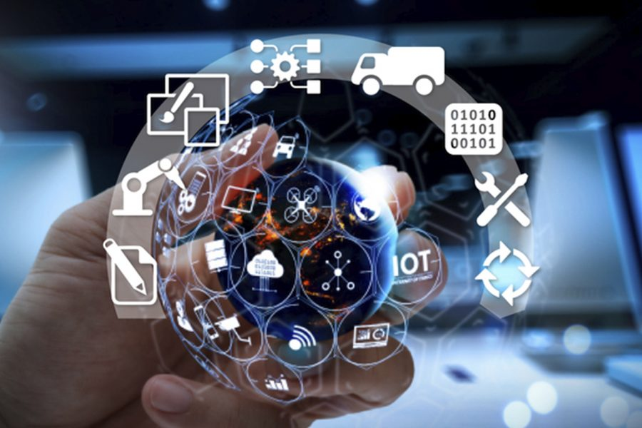

Internet de las Cosas
Que es el Internet de las Cosas?
El Internet de las cosas (IoT) es el proceso que permite conectar elementos físicos cotidianos al
Internet:
Desde objetos domésticos comunes, como las bombillas, hasta recursos para la atención de la salud, como
los
dispositivos médicos; también incluyen prendas y artículos personales, como los relojes inteligentes, e
incluso los semáforos en ciudades inteligentes.
Cómo funciona el IoT?
Los dispositivos IoT se conectan con un proceso llamado M2M (machine to machine, o máquina a máquina) en
el que dos dispositivos o máquinas cualesquiera se comunican entre sí utilizando cualquier tipo de
conectividad (que puede ser cable, WiFi, Bluetooth, etc.), haciendo su trabajo sin la necesidad de que
un humano intervenga. Esto se realiza a necesariamente con sensores y chips específicos que están
dispuestos en los dispositivos (por ejemplo, un smartphone habitualmente tiene sensor de luz ambiental,
giroscopio, etc.).

Estos dispositivos conectados generan una gran cantidad de datos que llegan a una plataforma IoT que recolecta, procesa y analiza dichos datos. Esta información se hace relevante al usuario porque gracias a ella se pueden sacar conclusiones de los hábitos y preferencias del mismo, así como para facilitarle la vida. Por ejemplo, y hay algún fallo en tu coche te puede llegar un aviso para que lo lleves al taller.